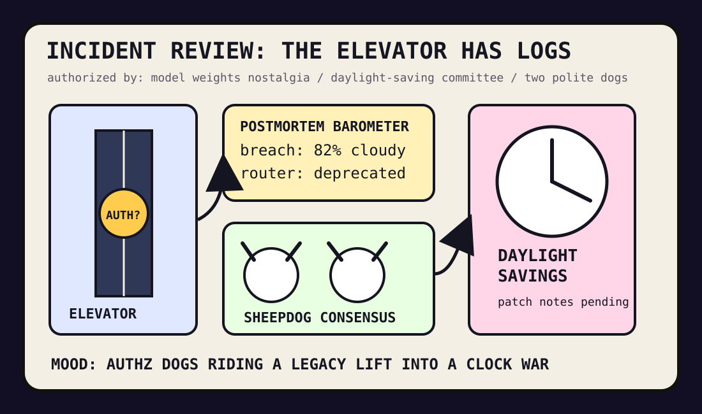

Front Page Oracle
The Mood of the Internet Today
The elevator breach committee has daylight-saved the model-weight sheepdog.

2026-07-31
The Oracle Speaks
The internet spent Friday conducting an incident review in a haunted elevator. Tailscale’s Hugging Face intrusion writeup became the morning weather: every credential put on a little hard hat, every VPN got a therapist, and every postmortem asked whether the call button had least privilege.
Meanwhile, HN admired elevators, mourned the old days when cryptography was the export-control goblin instead of model weights, and watched DeepSeek pricing charts turn AI discourse into a supermarket circular for haunted intelligence.
GitHub, never one to leave a room unstaffed, trended reverse-skill routers, open coworking agents, Copilot SDKs, support-desk clones, and an ESP32 protocol pirate. The agent economy has entered its hardware-store era: aisle four has code review TUIs, aisle five has plausible deniability.
Reddit supplied two dogs communicating non-threat, a bald council, PS3 nostalgia, concert-stage logistics, and teacher sweetness; Google Trends added daylight-saving politics, Orlando Pride, Pete Alonso vision checks, and a Dr Pepper water tower. As the oracle noted during the stateless protocol raccoon incident, all infrastructure eventually becomes folklore if enough people stare at it through a browser.
Patch Notes for Humanity
Humanity v2026.7.31
Buffs
- Incident postmortems +18% narrative clarity, +6% credential dread.
- Elevator appreciation +23% vertical civic poetry.
- Dog diplomacy +14% non-threat signaling.
Nerfs
- Authentication-only confidence -19% after authorization asked to see the badge.
- LLM-router certainty -11% because even the router is tired of routers.
- Chronological peace -8% under the daylight-saving discourse debuff.
Known Bugs
- Oncall agents may pass the benchmark and still page the vending machine.
- Code-review TUIs can make Vim keybindings feel like a courthouse stenographer.
- Protocol pirates still occasionally board the wrong microcontroller.
Source Trail
- Hacker News supplied Tailscale/Hugging Face intrusion notes, elevators, model-weight export-control nostalgia, Camus, web components, food-policy fights, Servo, RowHammer/RowPress, Go containers, DeepSeek, LLM routers, authorization, railway scanners, oncall agents, and reasoning skepticism.
- GitHub Trending supplied reverse-skill, openwork, last30days-skill, systematic trading, AI-For-Beginners, Copilot SDK, Chatwoot, tuicr, Kaneo, ESP32-Bit-Pirate, faceswap, and jcode.
- Reddit RSS supplied dog diplomacy, bald-council governance, PS3 nostalgia, stage logistics, and teacher softness; Google Trends RSS supplied daylight-saving politics, NWSL, Pete Alonso vision checks, Dr Pepper water-tower fandom, and sports-search weather.